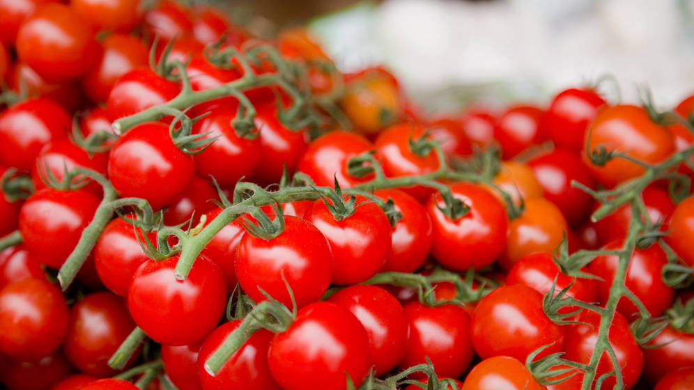
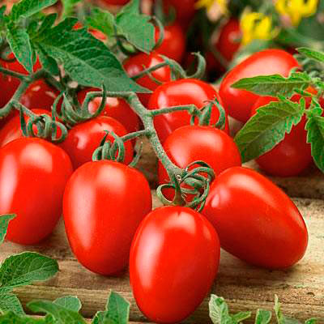
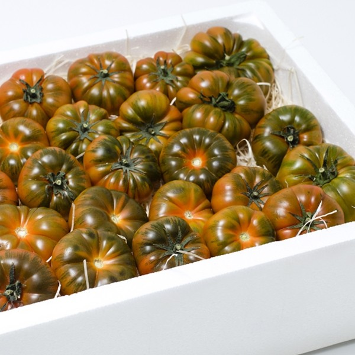
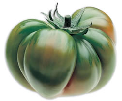
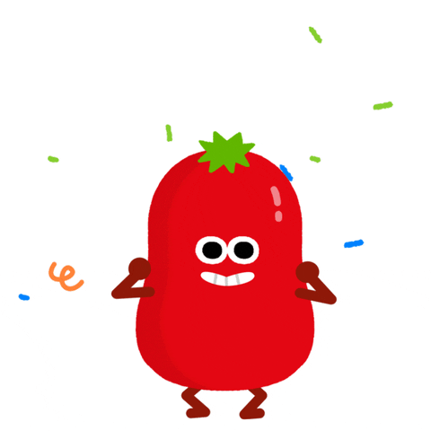

| 1. TOMATE CHERRY | 2. TOMATE SALADETE | 3. TOMATE RAF | 4. TOMATE KUMATO | 5. TOMATE AZUL | 6. TOMATE BIG RAIN |
|  |  |  |  |
|
|
Llegó a Europa hasta el siglo XVI de la mano de Hernán Cortés
Los primeros tomates europeos no eran rojos sino amarillos
Fue considerado durante mucho tiempo un fruto tóxico
Se utilizó inicialmente como fruta decorativa
Existen más de 10.000 variedades
Es en un 94% agua
Enlace a la web tipos de tomate, clases y variedades.‘La Tomatina’ es un festival que se celebra en la Comunidad Valenciana, específicamente en Buñol, una ciudad ubicada al este de España. Durante esta celebración los participantes se tiran tomates con la única finalidad de divertirse. Esta guerra de tomates normalmente dura una hora y es una tradición que realiza desde 1944 y que ocurre el último miércoles de agosto, semana en la que se celebran las festividades de esta localidad.
En 1975 el ayuntamiento se hizo cargo de la organización del festival y, desde entonces la cantidad de asistentes ha ido incrementando considerablemente año tras año. Por lo mismo, se han creado reglas y restricciones que se modifican constantemente y que aseguran el correcto funcionamiento y seguridad de la tradición, como por ejemplo:
Los tomates tienen que ser aplastados antes de ser tirados para evitar hacerle daño a otras personas.
Únicamente es permitido tirar tomates, cualquier otro objeto es prohibido.
Los asistentes deben dar paso a los camiones.
No es permitido ingresar botellas ni objetos pesados.
No se deben romper ni lanzar camisetas.
Se debe dejar de lanzar tomates al producirse el disparo de la segunda “carcasa”.
Y por supuesto, seguir todas las indicaciones del personal de seguridad.
Ingredientes de la receta de gazpacho andaluz:
1/2 kilo de tomate maduro 1/2 pimiento verde 1 diente de ajo 1/2 pepino 1 dl de aceite de oliva 4 cucharadas de vinagre de vino 1 rebanada de pan blanco (si no dispones de pan blanco usa pan de molde) sal fina |
 |
Para ver más recetas consulte esta web
15 recetas con el tomate de protagonista.